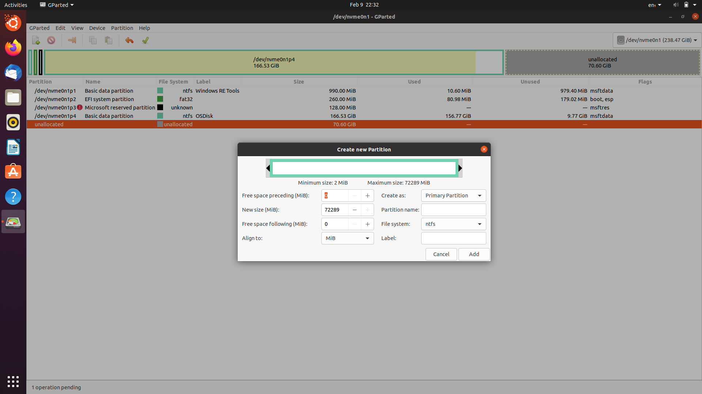

<!DOCTYPE html>
<html>
	<head>
		<meta charset="utf-8">
		<meta name="viewport" content="width=device-width, initial-scale=1">
		<title>Dual Booting</title>
		<link href="https://cdnjs.cloudflare.com/ajax/libs/font-awesome/5.15.1/css/all.min.css" rel="stylesheet"/>
		<link href="https://fonts.googleapis.com/css?family=Roboto:300,400,500,700&display=swap" rel="stylesheet"/>
		<link href="https://cdnjs.cloudflare.com/ajax/libs/mdb-ui-kit/3.10.2/mdb.min.css" rel="stylesheet"/>
	</head>

	<body>
		<div class="container" style="margin: auto;	width: 82%;">
<!-- 			<section id="intro">
				<div class="text-center">
			        <h4 style="margin-top: 2rem; margin-bottom: 1rem;"><strong>HY System Dual Booting - Tutorial</strong></h4>
			    </div>
			    <p class="note note-danger">
		            <strong>Disclaimer:</strong> The author assumes no responsibility or liability for any consequeses that may arise from the use of this site.
		        </p>
		        <p class="note note-warning">
		            <strong>Disclaimer:</strong> Alteration of the hard drive is not specifically addressed in the AUP. Please confirm you are allowed to do so before continuing.
		        </p>
		        <p class="note note-primary">
		            <strong>Information:</strong> A USB flash drive with at least 8GB of storage space is required for this tutorial.
		        </p>
		        <p class="note note-primary">
		            <strong>Information:</strong> It is recomended you have at least 90GB of free space on your laptop.
		        </p>

		        <p>To dual boot on our device, we must first create a free partion on the device. As the Windows installer does not allow this, we will boot into Linux to create our partions.</p>
		        <p>Disk partitioning or disk slicing is the creation of one or more regions on secondary storage, so that each region can be managed separately. These regions are called partitions. <a href="https://en.wikipedia.org/wiki/Disk_partitioning">[1]</a></p>
			</section>

			<section id="bootinglinux">
				<hr class="my-4">
				<div class="text-center">
					<h4 style="margin-bottom: 1rem;"><strong>Booting into Ubuntu</strong></h4>
				</div>
				<p>To boot into Linux, we must create a bootable drive. First, we must download a Ubuntu ISO file from <a href="https://ubuntu.com/download/desktop">Canonical</a>. While the file is downloading, we can format our USB. Plug in your USB and right click it, then select <b>format</b>.</p>
				<a class="btn btn-primary" data-mdb-toggle="collapse" href="#format" role="button" aria-expanded="false" aria-controls="format">Show image</a>
				<div class="collapse mt-3 text-center" id="format">
					
				</div>
				<br><br>
				<p>Then, select Default for every option except the file format. This should be set as <b>FAT32</b>. Then, click <b>start</b>.</p>
				<p class="note note-danger"><strong>Warning:</strong> This will wipe all of the data on the USB. Make sure to copy over the data if you wish to keep it.</p>
				<a class="btn btn-primary" data-mdb-toggle="collapse" href="#formatOptions" role="button" aria-expanded="false" aria-controls="formatOptions">Show image</a>

				<div class="collapse mt-3 text-center" id="formatOptions">
					
				</div>
				<br><br>
				<p>Once the file has finished downloading, double click the downloaded file. This should mount the ISO file.</p>
				<a class="btn btn-primary" data-mdb-toggle="collapse" href="#mountedfile" role="button" aria-expanded="false" aria-controls="mountedfile">Show image</a>
				<div class="collapse mt-3 text-center" id="mountedfile">
					
				</div>
				<br><br>

				<p>Now, open the mounted disk, select <b>all</b> of the files inside and drag them over to the USB. The USB should now contain the required files.</p>
				<p class="note note-warning"><strong>Warning:</strong> Make sure to select <b>all</b> the files!</p>
				<p class="note note-primary"><strong>Note:</strong> Depending on the speed of your USB, this may take 2 - 20 minutes.</p>
				<a class="btn btn-primary" data-mdb-toggle="collapse" href="#filesUSB" role="button" aria-expanded="false" aria-controls="filesUSB">Show image</a>
				<div class="collapse mt-3 text-center" id="filesUSB">
					
				</div>
				<br><br>
				<p>We can now boot into the USB. Click the Start button and then click the Power icon so you can see the Shutdown options. Press and hold the Shift key, then click <b>"Restart"</b>. You'll see the Advanced Startup Options screen. Choose <b>"Use a device."</b> Choose the USB device that you want to boot from, and your computer will then restart using your USB drive. <a href="https://www.businessinsider.com.au/how-to-boot-from-usb-windows-10-2019-7">[2]</a></p>

				<a class="btn btn-primary" data-mdb-toggle="collapse" href="#startupOptions" role="button" aria-expanded="false" aria-controls="startupOptions">Show image</a>
				<div class="collapse mt-3 text-center" id="startupOptions">
					
				</div>
				<br><br>
				<p>You'll a grub screen that gives you a few options. You can choose <b>Ubuntu</b>. Once loaded, press <b>Try Ubuntu</b>.</p>
				<p class="note note-primary"><strong>Note:</strong> You can skip file checks by pressing CTR-C when prompted.</p>
			</section>

			<section id="linuxpartions">
				<hr class="my-4">
				<div class="text-center">
					<h4 style="margin-bottom: 1rem;"><strong>Creating partions with Ubuntu</strong></h4>
				</div>
				<p>After booting into Ubuntu, we can now create the partion. First, click the applications menu in the bottom left. Then, search for GParted.</p>
				<a class="btn btn-primary" data-mdb-toggle="collapse" href="#applicationsmenu" role="button" aria-expanded="false" aria-controls="applicationsmenu">Show images</a>
				<div class="collapse mt-3 text-center" id="applicationsmenu">
					
					
					<br><br><br><br><br><br><br><br><br><br>
				</div>
				<br><br>
				<p>Confirm that the top right displays <b>/dev/nvme0n1 (238.47GB)</b>. Right click the partion named <b>OSDisk</b> and select <b>Resize / Move</b>. Set the <b>New Size</b> input to the <b>minimum size (located just above) + 10000 (~10GB)</b>. Then, tap on any another input, then click <b>Resize / Move</b>.</p>
				<a class="btn btn-primary" data-mdb-toggle="collapse" href="#shrinkpartion" role="button" aria-expanded="false" aria-controls="shrinkpartion">Show image</a>
				<div class="collapse mt-3 text-center" id="shrinkpartion">
					
				</div>
				<br><br>
				<p>There should now be a partion called <b>Unallocated Space</b>, it should be around 70-100GB in size. Right click it and click <b>New</b>. Make sure the <b>New Size</b> input is the max size and the <b>File system</b> is ntfs. Press <b>Add</b>.</p>
				<a class="btn btn-primary" data-mdb-toggle="collapse" href="#newpartion" role="button" aria-expanded="false" aria-controls="newpartion">Show image</a>
				<div class="collapse mt-3 text-center" id="newpartion">
					
				</div>
				<br><br>
				<p>We can now press CTR-ENTER to make the changes.</p>
				<p class="note note-danger">
		            <strong>Disclaimer:</strong> The author assumes no responsibility or liability for any consequeses that may arise from the use of this site.
		        </p>
				<p>You can now close Ubuntu by clicking the top right and pressing <b>Power off</b>.</p>
			</section>

			<section id="installing">
				<hr class="my-4">
				<div class="text-center">
					<h4 style="margin-bottom: 1rem;"><strong>Installing Windows 11</strong></h4>
				</div>
				<p>Now that we have our partions, we can install Windows 11. First, we must create another bootable drive. We once again need to download an ISO, avaliable from <a href="https://www.microsoft.com/software-download/windows11">Microsoft</a>. Scroll down to <b>Download Windows 11 Disk Image (ISO)</b> and select <b>Windows 11 (multi-edition ISO)</b>.</p>
				<p class="note note-primary"><strong>Note:</strong> Depending on your internet speed, this may take upwards of 4 minutes.</p>
				<p class="note note-primary"><strong>Note:</strong> If you so desire, you can download a <b>Windows 10 ISO</b> <a href="https://www.howtogeek.com/427223/how-to-download-a-windows-10-iso-without-the-media-creation-tool/">here</a>.</p>
				<p>While the file is downloading, we can format our USB again. Plug in your USB and right click it, then select format. Then, select Default for every option except the file format. This should be set as <b>ntfs</b>.</p>
				<p>Once the file has finished downloading, double click the downloaded file. This should mount the ISO file.</p>
				<p>Once again, click into the mounted drive and drag everything onto the USB.</p>
				<p class="note note-warning"><strong>Warning:</strong> Make sure to select <b>all</b> the files!</p>
				<p class="note note-primary"><strong>Note:</strong> Depending on the speed of your USB, this may take 2 - 20 minutes.</p>
				<a class="btn btn-primary" data-mdb-toggle="collapse" href="#windowsfiles" role="button" aria-expanded="false" aria-controls="windowsfiles">Show image</a>
				<div class="collapse mt-3 text-center" id="windowsfiles">
					
				</div>
				<br><br>
				<p>We can now boot into the USB. Click the Start button and then click the Power icon so you can see the Shutdown options. Press and hold the Shift key, then click <b>"Restart"</b>. You'll see the Advanced Startup Options screen. Choose <b>"Use a device."</b> Choose the USB device that you want to boot from, and your computer will then restart using your USB drive. <a href="https://www.businessinsider.com.au/how-to-boot-from-usb-windows-10-2019-7">[2]</a></p>

				<a class="btn btn-primary" data-mdb-toggle="collapse" href="#startupOptions" role="button" aria-expanded="false" aria-controls="startupOptions">Show image</a>
				<div class="collapse mt-3 text-center" id="startupOptions">
					
				</div>
				<br><br>
				<p>The first thing you will want to do is select <b>Install</b>. Then, make sure to select <b>Custom</b>. Find the partion that is mostly free and around the size of the partion you created and click next. You can ignore the GPT warning.</p>
				<p class="note note-danger"><strong>Warning:</strong> Make sure to select the correct options!</p>
				<p class="note note-primary"><strong>Note:</strong> The partion is <b>most likely</b> Partion 6.</p>
			</section>
			<section id="setup">
				<hr class="my-4">
				<div class="text-center">
					<h4 style="margin-bottom: 1rem;"><strong>Setting up Windows 11</strong></h4>
				</div>
				<p>Select your Region – Australia. Then, select your keyboard layout – US. Click the Skip button. and select the wireless network. <a href="https://www.windowscentral.com/how-set-new-windows-11-laptop-you-received-holiday">[3]</a></p>
				<p class="note note-primary"><strong>Note:</strong> To connect to school internet, use your <b>school</b> username and password.</p>
				<p>Confirm a name for the computer, <b>this is public!</b> Now you must add a Microsoft account. If you have a personal one, you can use that, otherwise, you can create one. <a href="https://www.windowscentral.com/how-set-new-windows-11-laptop-you-received-holiday">[3]</a></p>
				<p class="note note-primary"><strong>Note:</strong> Your school account is <b>not</b> a Microsoft account.</p>
				<p class="note note-primary"><strong>Note:</strong> If you are creating a new account, make sure to use a valid email address.</p>
				<p>Continue with setup up to the privacy settings, I would recommend turning all of them off (except location if you wish). For the customizing your experience, I recommend selecting none as this is just more data for Microsoft. Then click the <b>Only save files to this PC</b> option, next Click the <b>No, thanks</b> option. Once you complete the steps, you will be presented with the Windows 11 desktop. <a href="https://www.windowscentral.com/how-set-new-windows-11-laptop-you-received-holiday">[3]</a></p>
			</section>
			<section id="links">
				<hr class="my-4">
				<div class="text-center">
					<h4 style="margin-bottom: 1rem;"><strong>Useful Links</strong></h4>
				</div>
				<ul>
					<li><a href="https://www.makeuseof.com/how-to-quickly-remove-bloatware-from-windows-11/">Uninstalling bloatware</a></li>
					<li><a href="https://www.kapilarya.com/connect-windows-11-to-work-or-school-account">Adding a school account</a></li>
					<li><a href="https://www.office.com">Installing Office 365</a></li>
					<li><a href="mailto:?subject=Lockdown Browser&body=Hi, I would like the install link for Lockdown Browser%0d%0a%0d%0aMY EMAIL IS s1072489.">Installing Lockdown Browser</a></li>
				</ul>
			</section>
			<section id="faq">
				<hr class="my-4">
				<div class="text-center">
					<h4 style="margin-bottom: 1rem;"><strong>Frequently Asked Questions</strong></h4>
				</div>

				<p><h5>Will my files/apps be deleted?</h5><h6>No, everything you had on Windows 10 will remain where it was.</h6></p>
				<p><h5>How long does this take?</h5><h6>It will take about 40 minutes to 1 hour.</h6></p>
				<p><h5>I'm getting a memory allocation error, what can I do?</h5><h6>Check your updates, and hopefully it won't happen again.</h6></p>
				<p><h5>I don't have enough space, how can I free enough space?</h5><h6>You can delete unused files or uninstall applications.</h6></p>

				<p><h5>Help.</h5><h6>You can request for help from either me, or other technologically fluent individuals. (eg. s1058357)<h6></p>
			</section> -->

			<footer>
			<br><br><br><br><br><br><br><br>
			<div class="text-center">
			<h3>This website has been taken down due to concerns about the school's AUP.</h3></div>
			<br><br><br><br><br><br><br><br><br><br>
						<div class="footer border-top border-gray-light mt-5 pt-3" style="color: #586069 !important; text-align: right;">
							<p style="float: left;">Copyright &copy; 2022 s1072489</p>
							<p>This site is open source. <a href="https://github.com/s1072489/s1072489.github.io/">Improve this page</a>.</p>
					</div>
				</div>
			</footer>
		</div>

		<script type="text/javascript" src="https://cdnjs.cloudflare.com/ajax/libs/mdb-ui-kit/3.10.2/mdb.min.js"></script>
	</body>
</html>
